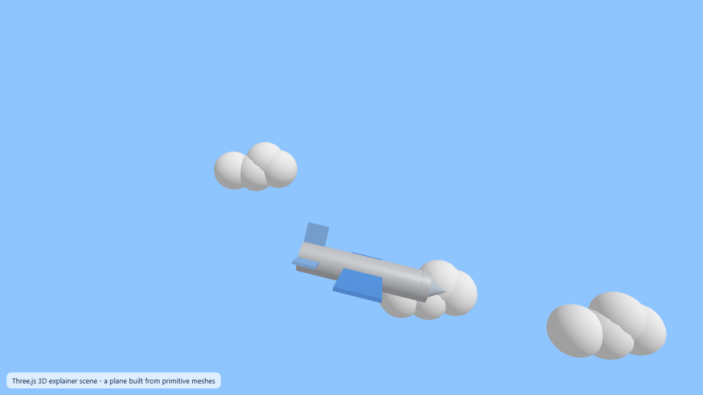

Three.js basics for 3D explainer scenes
A standalone Three.js scene: renderer, scene, camera, lights and meshes, building a 3D airplane from primitives.
Extension - our own code, rendered to a real MP4This is the first page of Part 3, the 3D part of the guide. The video does not cover 3D at all, so everything here is an extension we added. In this step you meet the handful of objects every Three.js program is built from, then you run one complete, standalone page that draws a little airplane among clouds — all from basic shapes, with no model files.
Part 2 drew the explainer in flat 2D with SVG. Here we switch to real 3D: a world with depth, a movable viewpoint, and lights that shade the surfaces. The payoff is the same airplane idea from the video, but now it banks and drifts through a 3D sky. Once you understand this standalone page, Step 13 drops the very same scene into Remotion so it can be recorded to a video file.
The core idea: six objects
Three.js is a JavaScript library for drawing 3D graphics in the browser. It sits on top of WebGL, the low-level browser technology that talks to your graphics card. Three.js hides the hard parts and gives you a small set of friendly objects. Almost every program wires up the same six:
- A renderer — the thing that actually draws, onto a
<canvas>. - A scene — the container holding everything you want to show.
- A camera — the viewpoint the scene is drawn from.
- One or more lights — without them most surfaces are black.
- A mesh — a visible object, made of a geometry (its shape) plus a material (its surface).
- An animation loop — a function called about 60 times a second that nudges things and re-draws.
New to 3D graphics? 2D vs 3D in one minute
In 2D (like Part 2's SVG) every point has two numbers: across (x) and down (y). You place shapes directly on a flat picture. In 3D there is a third number, depth (z), so points are written as a vector [x, y, z]. Because the world now has depth, you cannot just "look at" it — you need a camera to say from where, and lights to say how surfaces catch the light. That is why a 3D program has more moving parts than a 2D one: the extra objects exist to answer "from which viewpoint?" and "lit how?".
What is WebGL?
WebGL is the browser feature that draws hardware-accelerated 3D using your computer's graphics chip (GPU). It is powerful but very low-level: on its own you would write hundreds of lines just to show a cube. Three.js is a friendly layer on top — you describe shapes and lights, and Three.js generates the WebGL calls for you. You will meet WebGL again in Step 15, because getting it to run inside a headless browser needs one special flag.
renderer.render(scene, camera) runs.Mesh = geometry + material
A mesh is the smallest visible thing you can add. It always needs two ingredients: a geometry that gives its shape, and a material that gives its surface. Our airplane never loads a 3D model from a file. Instead it is assembled from built-in primitive shapes: a cylinder for the body, a cone for the nose, and flat boxes for the wings, tail and fin. Clouds are just clusters of spheres.
The scene graph and grouping
Objects in a scene form a tree called the scene graph. When you put several meshes inside a Group and then move or rotate the group, all the children move together, keeping their positions relative to the group. That is exactly how our airplane works: the body, nose, wings, tail and fin are five separate meshes added to one group, and the whole group flies as a single object.
3D space and the axes
Positions are written as [x, y, z]. In Three.js, x runs right, y runs up, and z runs toward you (out of the screen). Our camera sits at [0, 1, 7] — slightly up and well back along z — and looks toward the centre, so the plane near z = 0 is in full view and clouds with negative z sit further away.
Run the standalone page
This page needs nothing installed. It loads Three.js straight from a CDN using an import map, so you can open it as a plain file.
- Save the file below as
scene.htmlanywhere on your computer (in our project it lives atcode/three3d/scene.html). - Double-click it, or open it with File → Open in any modern browser. You should see a blue sky with a drifting, banking airplane.
- To freeze one still moment, add
?t=5to the end of the address (for examplescene.html?t=5) and reload. That draws the single frame at 5 seconds instead of animating — the same trick we used to capture the screenshot below.
<!doctype html>
<html lang="en">
<head>
<meta charset="utf-8">
<meta name="viewport" content="width=device-width, initial-scale=1">
<title>Three.js airplane scene</title>
<style>
html, body { margin: 0; height: 100%; background: #8ec5ff; overflow: hidden; }
#c { display: block; width: 100vw; height: 100vh; }
#hud { position: fixed; left: 12px; bottom: 12px; font: 13px system-ui; color: #0b2545;
background: rgba(255,255,255,.7); padding: 6px 10px; border-radius: 8px; }
</style>
</head>
<body>
<canvas id="c"></canvas>
<div id="hud">Three.js 3D explainer scene - a plane built from primitive meshes</div>
<!-- Load Three.js as an ES module from a CDN. An import map lets us write a bare
"three" import. For production you would install three with npm instead. -->
<script type="importmap">
{ "imports": { "three": "https://cdnjs.cloudflare.com/ajax/libs/three.js/0.182.0/three.module.min.js" } }
</script>
<script type="module">
import * as THREE from "three";
const canvas = document.getElementById("c");
const renderer = new THREE.WebGLRenderer({ canvas, antialias: true });
renderer.setPixelRatio(Math.min(devicePixelRatio, 2));
const scene = new THREE.Scene();
scene.background = new THREE.Color("#8ec5ff");
const camera = new THREE.PerspectiveCamera(55, 16 / 9, 0.1, 100);
camera.position.set(0, 1, 7);
// Lights: one soft ambient fill plus a directional "sun" for shading.
scene.add(new THREE.AmbientLight(0xffffff, 1.1));
const sun = new THREE.DirectionalLight(0xffffff, 1.6);
sun.position.set(5, 6, 5);
scene.add(sun);
// Build the airplane from primitive geometries, grouped so we can move it as one.
function buildPlane() {
const g = new THREE.Group();
const body = new THREE.Mesh(
new THREE.CylinderGeometry(0.28, 0.28, 2.4, 24),
new THREE.MeshStandardMaterial({ color: "#e5e7eb", roughness: 0.5, metalness: 0.2 })
);
body.rotation.z = Math.PI / 2;
g.add(body);
const nose = new THREE.Mesh(
new THREE.ConeGeometry(0.28, 0.5, 24),
new THREE.MeshStandardMaterial({ color: "#cbd5e1" })
);
nose.position.x = 1.3; nose.rotation.z = -Math.PI / 2;
g.add(nose);
const wings = new THREE.Mesh(
new THREE.BoxGeometry(0.7, 0.06, 3.4),
new THREE.MeshStandardMaterial({ color: "#60a5fa" })
);
g.add(wings);
const tail = new THREE.Mesh(
new THREE.BoxGeometry(0.4, 0.05, 1.4),
new THREE.MeshStandardMaterial({ color: "#93c5fd" })
);
tail.position.x = -1.0; g.add(tail);
const fin = new THREE.Mesh(
new THREE.BoxGeometry(0.4, 0.6, 0.05),
new THREE.MeshStandardMaterial({ color: "#93c5fd" })
);
fin.position.set(-1.0, 0.35, 0); g.add(fin);
return g;
}
function buildCloud(x, y, z) {
const g = new THREE.Group();
const mat = new THREE.MeshStandardMaterial({ color: "#ffffff" });
[[0, 0, 0], [0.7, 0.1, 0], [-0.7, 0.05, 0], [0.3, 0.35, 0]].forEach((o) => {
const m = new THREE.Mesh(new THREE.SphereGeometry(0.6, 16, 16), mat);
m.position.set(o[0], o[1], o[2]); g.add(m);
});
g.position.set(x, y, z); return g;
}
const plane = buildPlane();
scene.add(plane);
const clouds = [buildCloud(-4, -1.6, -3), buildCloud(3, 1.8, -5), buildCloud(0, -2.2, -2)];
clouds.forEach((c) => scene.add(c));
function resize() {
const w = innerWidth, h = innerHeight;
renderer.setSize(w, h, false);
camera.aspect = w / h; camera.updateProjectionMatrix();
}
addEventListener("resize", resize); resize();
// Draw one frame for time t (seconds). Same idea as the Remotion version.
function renderAt(t) {
plane.position.x = -3 + (t / 37.3) * 6;
plane.position.y = Math.sin(t * 1.2) * 0.4;
plane.rotation.z = Math.sin(t * 1.2) * 0.25;
plane.rotation.y = Math.sin(t * 0.6) * 0.15;
clouds.forEach((c, i) => { c.position.x = ((c.position.x - 0.01) % 12 + 12) % 12 - 6; });
renderer.render(scene, camera);
}
const start = performance.now();
function loop() { renderAt((performance.now() - start) / 1000); requestAnimationFrame(loop); }
const qp = new URLSearchParams(location.search);
if (qp.get("t") !== null) renderAt(parseFloat(qp.get("t"))); // freeze a frame
else loop();
</script>
</body>
</html>
Line by line
| Line(s) | Code | What it does & why |
|---|---|---|
| 7–12 | <style>…</style> | Makes the page fill the window and gives it a sky-blue background, so the canvas has no scrollbars or gaps. Purely cosmetic for the standalone demo. |
| 15 | <canvas id="c"></canvas> | The drawing surface. Three.js paints every frame here. Without a canvas there is nowhere to draw. |
| 16 | <div id="hud">…</div> | A small caption floating over the scene. Just a label; it is not part of the 3D world. |
| 20–22 | <script type="importmap"> | The import map. It says that the bare name three means this CDN URL, so the module script below can write import ... from "three" with no build step. For a real project you would install three with npm instead. |
| 24–25 | <script type="module"> import * as THREE from "three"; | Loads the whole Three.js library under the name THREE. A module script is needed so import works. |
| 27–29 | new THREE.WebGLRenderer({ canvas, antialias: true }) | Creates the renderer bound to our canvas. antialias smooths jagged edges; setPixelRatio caps the pixel density at 2 so it stays sharp on high-DPI screens without wasting performance. |
| 31–32 | const scene = new THREE.Scene(); | Creates the world container and paints its background sky-blue. Everything you want to see must be added to this scene. |
| 34–35 | new THREE.PerspectiveCamera(55, 16/9, 0.1, 100) | The viewpoint. The arguments are field of view (55 degrees), aspect ratio, and the near/far clip distances (objects closer than 0.1 or further than 100 are not drawn). Line 35 places it back and slightly up. |
| 38 | new THREE.AmbientLight(0xffffff, 1.1) | A soft, even fill light so no surface is pure black. On its own it looks flat, which is why we add a second light next. |
| 39–41 | const sun = new THREE.DirectionalLight(...) | A directional "sun" coming from one side. It gives surfaces light and shadow sides, so the plane looks solid instead of flat. Placing it (line 40) sets the direction the light comes from. |
| 44–45 | function buildPlane() { const g = new THREE.Group(); | Starts a function that returns one group. The group is the airplane; we add parts to it so they move as one. |
| 46–51 | new THREE.Mesh(new THREE.CylinderGeometry(...), new THREE.MeshStandardMaterial(...)) | The fuselage: a cylinder mesh. Line 50 rotates it 90 degrees around z so the long axis lies flat like a plane body. MeshStandardMaterial reacts to light, which is why the lights above matter. |
| 52–57 | new THREE.ConeGeometry(0.28, 0.5, 24) | The nose cone, moved forward to x = 1.3 and rotated to point along the body. 24 is how many segments make the cone round. |
| 58–62 | new THREE.BoxGeometry(0.7, 0.06, 3.4) | The main wings: a thin, wide box (thin in y, long in z). A flat box is the simplest way to get a wing without a model file. |
| 63–72 | tail … fin … | Two more thin boxes: a horizontal tail wing at the back (line 63–67) and an upright fin (line 68–72). Each is positioned relative to the group's centre. |
| 73 | return g; | Hands back the finished airplane group so the caller can add it to the scene. |
| 76–84 | function buildCloud(x, y, z) { … } | Builds one cloud as a group of four overlapping spheres sharing a single white material, then moves the whole group to the given position. Reusing one material for all four spheres is a small efficiency. |
| 86–89 | const plane = buildPlane(); scene.add(plane); … | Creates the plane and three clouds and adds them to the scene. This is where objects actually enter the scene graph; nothing is visible until it is added. |
| 91–96 | function resize() { … } addEventListener("resize", resize); resize(); | Keeps the canvas and the camera's aspect ratio matched to the window, so the picture never stretches. Calling resize() once at the start sets the initial size. |
| 99–106 | function renderAt(t) { … renderer.render(scene, camera); } | Draws one frame for time t in seconds. It moves the plane across, bobs it up and down with Math.sin, banks and yaws it, nudges the clouds, then calls renderer.render to paint. This single function is the whole animation. |
| 108–109 | const start = ...; function loop() { renderAt(...); requestAnimationFrame(loop); } | The animation loop: ask the browser to call loop before the next repaint (about 60 times a second), each time drawing the current elapsed time. This is what makes the plane move. |
| 110–112 | if (qp.get("t") !== null) renderAt(...); else loop(); | If the address has ?t=SECONDS, draw just that one frozen frame; otherwise start the live loop. The freeze mode is how we grabbed a clean screenshot. |
What is an animation loop?
A moving picture is just many still frames shown quickly. An animation loop is a function that runs over and over — here via requestAnimationFrame, which asks the browser to call you again right before it next repaints the screen (roughly 60 times a second). Each call, you move things a little based on the elapsed time and re-draw. Note the two running modes in this file: the live loop for watching in a browser, and the single-frame ?t= mode. Step 13 replaces the loop entirely — Remotion will tell the scene which frame to draw, one at a time.
scene.html and a blue sky fills the window with a small grey-and-blue airplane that drifts left to right while gently bobbing and banking, and three soft white clouds sliding past. Add ?t=5 to the address and reload to freeze a single frame, like the screenshot above.- Everything is black. You forgot the lights, or used a material that needs light (
MeshStandardMaterial) with nothing shining on it. Add an ambient and a directional light, as on lines 38–41. - Blank blue page, no plane. The camera is facing away from the objects, or they are behind its near/far clip range. Our camera at
[0, 1, 7]looks toward the origin where the plane sits. - Nothing happens at all. You added objects but never called
renderer.render(scene, camera). Adding to the scene does not draw it; the render call does. - "Failed to resolve module specifier three". The import map is missing or placed after the module script. It must come first, as on lines 20–22.
- Three.js draws 3D in the browser on top of WebGL, using six core objects: renderer, scene, camera, lights, meshes and an animation loop.
- A mesh is a geometry (shape) plus a material (surface); our airplane is only primitives — a cylinder, a cone and boxes — with clouds made from spheres.
- Objects form a scene graph; grouping lets the whole plane move as one.
- Positions are
[x, y, z]; the camera is pulled back on z and lit by an ambient fill plus a directional sun. - Nothing is visible until it is added to the scene and
renderer.render(scene, camera)is called each frame.